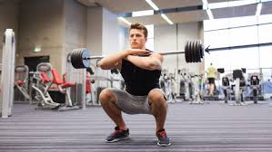
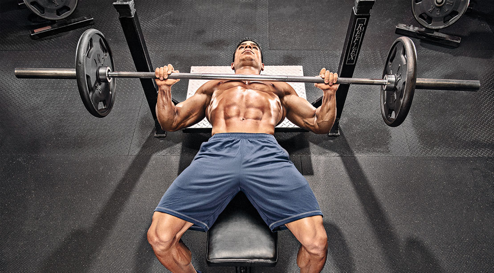
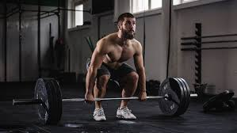

Los ejercisios
Las 3 displicinas que se deben realizar en el powerlifting están conformadas por diferente parámetros y reglas en cada una. Estas son:

Sentadilla
La sentadilla clásica bajas en una triple flexión de cadera, rodillas y tobillos de manera simultánea y subes hasta extender las piernas por completo.

Bench-Press
El press de banca es un ejercicio de peso libre que trabaja la fuerza de empuje del tren superior en el plano sagital.

Deadlift
El peso muerto es un ejercicio con pesas consiste en levantar una barra desde el suelo hasta la cintura. Se deberá bajar la barra y no tirarla.